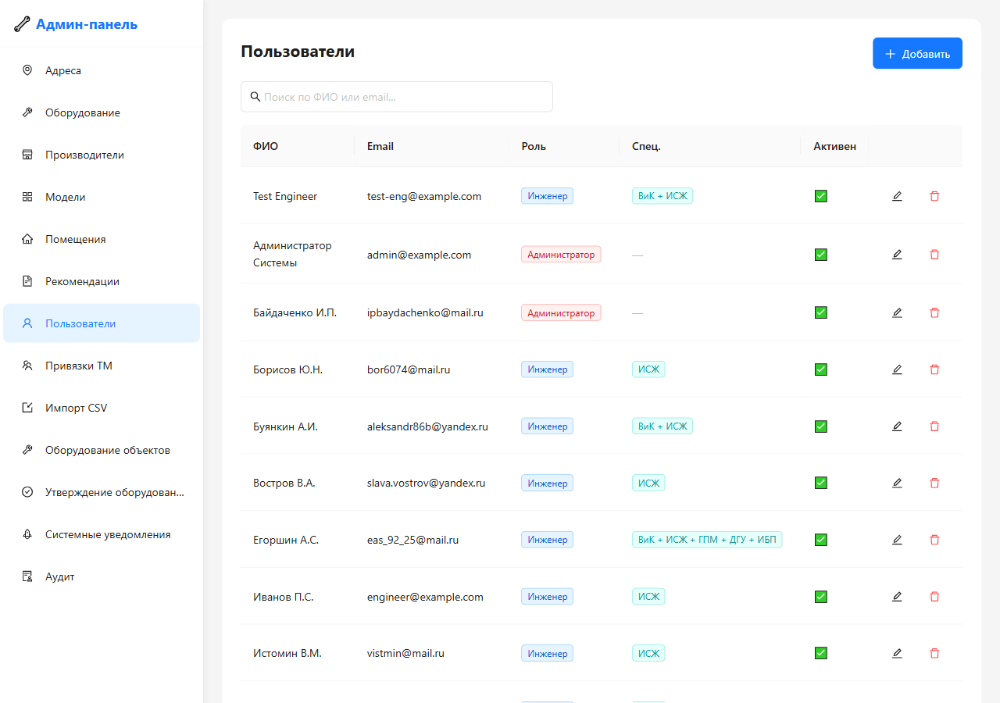
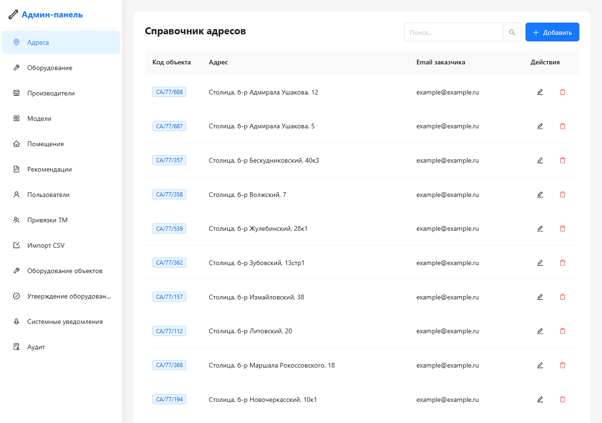
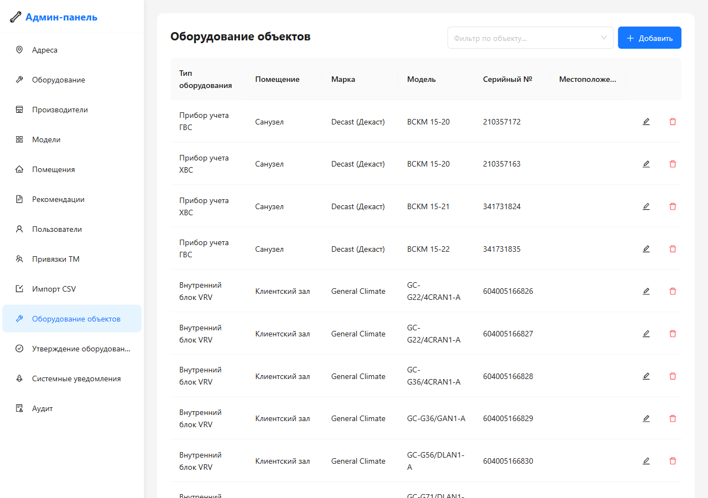
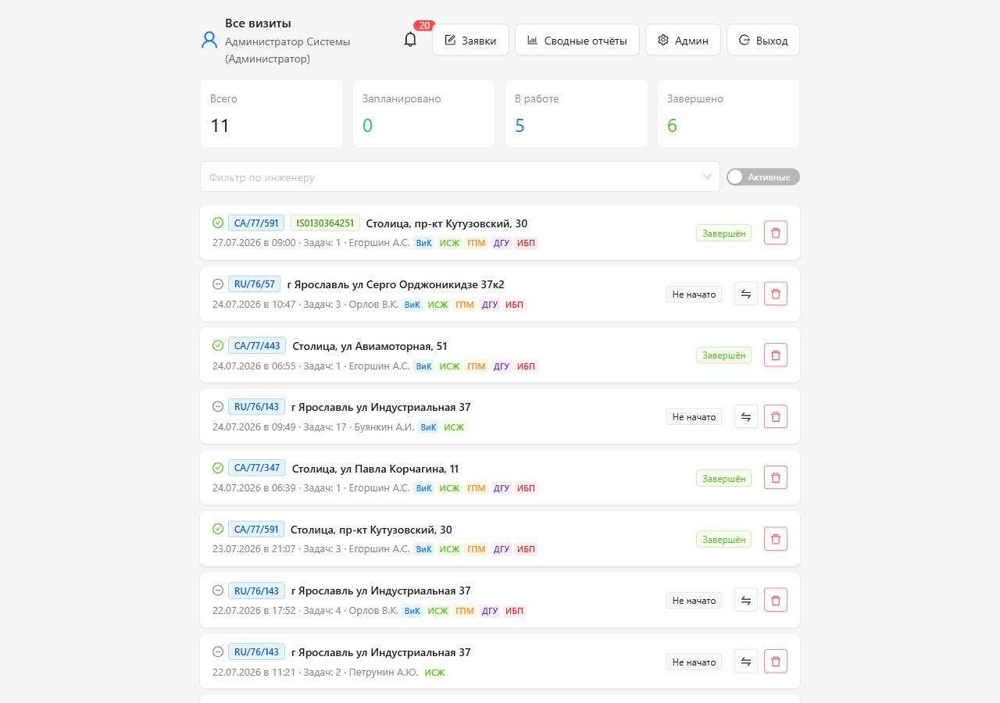
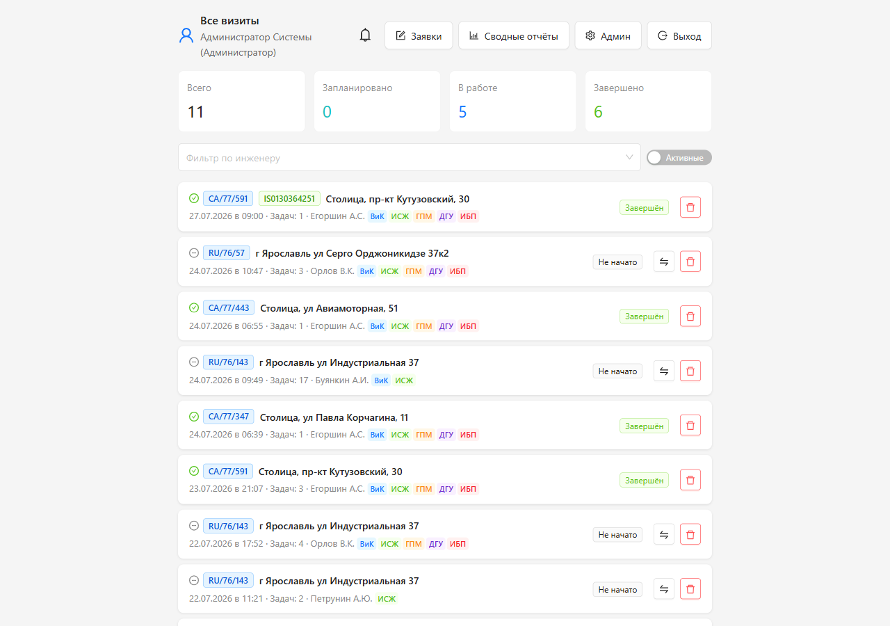

Пользовательская инструкция
Администратор системы
1. Введение
Администратор — пользователь с полным доступом к системе. Вы управляете справочниками, пользователями, привязками оборудования к объектам, контролируете все визиты и формируете отчёты.
1.1. Ваши возможности
| Функция | Описание |
|---|
| Управление пользователями | Создание, редактирование, блокировка учётных записей |
| Справочники | Адреса, виды оборудования, типы помещений, рекомендации, производители, модели |
| Привязка оборудования | Управление связью «объект — оборудование» |
| Модерация | Утверждение/отклонение предложений инженеров |
| Импорт | Массовая загрузка данных из CSV и XLSX |
| Визиты | Просмотр всех визитов, формирование отчётов |
| Заявки | Импорт внешних заявок, назначение инженеров |
2. Вход в систему
- Откройте приложение в браузере.
- Введите email и пароль администратора.
- Нажмите «Войти».
Скриншот 2.1 — Экран входа

Форма входа с полями «Email» и «Пароль», кнопкой «Войти» и ссылкой «Забыли пароль?».
3. Управление пользователями
Перейдите в раздел «Администрирование» → «Пользователи».
3.1. Создание пользователя
- Нажмите «+ Создать пользователя».
- Заполните:
- ФИО — обязательно
- Email — обязательно (используется для входа)
- Роль — Инженер / Территориальный менеджер / Администратор
- Специализация (только для инженеров) — чекбоксы: ВиК, ИСЖ, ГПМ, ДГУ, ИБП
- Задайте временный пароль или система сгенерирует автоматически.
- Нажмите «Создать».
Скриншот 3.1 — Форма создания пользователя
[ МЕСТО ДЛЯ СКРИНШОТА ]
Модальное окно «Создание пользователя». Поля: «ФИО» (текст), «Email» (текст), «Роль» (выпадающий список: Инженер/ТМ/Администратор). При выборе «Инженер» появляются чекбоксы специализации. Поле «Пароль» (опционально). Кнопки «Создать» и «Отмена».
Примечание: При смене роли с инженера на ТМ или Администратора специализация сбрасывается.
3.2. Редактирование пользователя
- Найдите пользователя в таблице (поиск по ФИО или email).
- Нажмите на строку — откроется форма редактирования.
- Измените нужные поля и нажмите «Сохранить».
Скриншот 3.2 — Таблица пользователей

Страница «Пользователи». Вверху — строка поиска и кнопка «+ Создать пользователя». Таблица: ФИО, email, роль, спец. (специализация), статус (активен/заблокирован). Строки кликабельны. Пагинация внизу.
3.3. Блокировка пользователя
Установите статус «Заблокирован» — пользователь не сможет войти в систему. Данные и история визитов сохраняются.
3.4. Поиск пользователей
Над таблицей расположена строка поиска:
- Поиск по ФИО и email
- Частичное совпадение (ввели «иван» — найдёт «Иванов»)
- Без учёта регистра
- Отображается до 50 записей
4. Справочник адресов (объектов)
Перейдите в раздел «Администрирование» → «Адреса».
4.1. Просмотр адресов
Таблица содержит: город, улица, дом, строение, полный адрес, аналитический код объекта, email заказчика.
Скриншот 4.1 — Справочник адресов

Таблица адресов. Колонки: город, улица, дом, строение, полный адрес, аналитический код, email заказчика. Кнопка «+ Добавить адрес» вверху. Строки кликабельны для редактирования.
4.2. Добавление адреса
- Нажмите «+ Добавить адрес».
- Заполните:
- Город — обязательно
- Улица — обязательно
- Дом — обязательно
- Строение/корпус — опционально
- Аналитический код объекта — уникальный, формат
RU/77/001
- Email заказчика — опционально
- Полный адрес формируется автоматически.
- Нажмите «Сохранить».
Скриншот 4.2 — Форма добавления адреса
[ МЕСТО ДЛЯ СКРИНШОТА ]
Модальное окно с полями: «Город», «Улица», «Дом», «Строение/корпус», «Аналитический код объекта» (с подсказкой формата), «Email заказчика». Превью полного адреса (авто). Кнопки «Сохранить» и «Отмена».
4.3. Удаление адреса (мягкое)
Нажмите «Удалить» — адрес будет помечен как удалённый. Он скроется из списков, но сохранится для исторических визитов.
5. Привязка «Объект — Оборудование»
Перейдите в раздел «Администрирование» → «Оборудование объектов».
5.1. Назначение
Этот модуль хранит информацию о том, какое оборудование физически установлено на каждом объекте. При создании визита инженер видит это оборудование и может добавить его в чек-лист.
5.2. Просмотр привязок
- Выберите адрес объекта из справочника.
- Отобразится список привязанного оборудования.
Скриншот 5.1 — Оборудование объекта

Страница «Оборудование объектов». Вверху — выпадающий список выбора адреса. Ниже — таблица оборудования: вид, помещение (или «⚠️ Не указано»), марка, модель, серийный номер, описание расположения, статус (активно/деактивировано). Кнопка «+ Добавить оборудование».
5.3. Добавление оборудования к объекту
- Нажмите «+ Добавить оборудование».
- Заполните:
- Вид оборудования — из справочника
- Тип помещения — из справочника (опционально)
- Марка, Модель, Серийный номер — текстовые поля
- Описание расположения — где установлено
- Наружный блок — отметьте для наружных блоков кондиционеров
- Нажмите «Сохранить».
Скриншот 5.2 — Форма добавления оборудования
[ МЕСТО ДЛЯ СКРИНШОТА ]
Модальное окно с полями: «Вид оборудования» (выпадающий список с поиском), «Тип помещения» (выпадающий список), «Марка» (текст), «Модель» (текст), «Серийный номер» (текст), «Описание расположения» (textarea), чекбокс «Наружный блок». Кнопки «Сохранить» и «Отмена».
5.4. Деактивация оборудования
Нажмите «Деактивировать» — запись скроется из списков инженера, но сохранится для истории визитов.
6. Справочник видов оборудования
Перейдите в раздел «Администрирование» → «Виды оборудования».
Скриншот 6.1 — Справочник видов оборудования

Таблица видов оборудования. Колонки: наименование, код, кол-во фото (1 или 2), требуемая специализация (цветные бейджи), статус (активен/деактивирован). Строки кликабельны для редактирования.
6.1. Редактирование
Нажмите на вид оборудования — откроется форма. Можно изменить наименование, код, количество фото, требуемую специализацию, статус.
7. Справочник типов помещений
Перейдите в раздел «Администрирование» → «Типы помещений».
Скриншот 7.1 — Справочник типов помещений

Таблица типов помещений. Колонки: наименование, код. Примеры: Электрощитовая, Серверная, Клиентский зал, Кровля, Фасад и т.д. Кнопка «+ Добавить».
8. Справочник типовых рекомендаций
Перейдите в раздел «Администрирование» → «Рекомендации».
8.1. Структура
Каждая рекомендация привязана к виду оборудования и содержит текст. Рекомендации отображаются инженеру в виде чекбоксов.
Скриншот 8.1 — Справочник рекомендаций
[ МЕСТО ДЛЯ СКРИНШОТА ]
Таблица рекомендаций. Колонки: вид оборудования (фильтр), текст рекомендации, порядок отображения, статус. Кнопка «+ Добавить рекомендацию». Фильтр по виду оборудования вверху.
8.2. Добавление рекомендации
- Нажмите «+ Добавить рекомендацию».
- Заполните:
- Вид оборудования — к какому виду относится
- Текст рекомендации — что писать в отчёте
- Порядок отображения — число для сортировки
- Нажмите «Сохранить».
Скриншот 8.2 — Форма добавления рекомендации
[ МЕСТО ДЛЯ СКРИНШОТА ]
Модальное окно с полями: «Вид оборудования» (выпадающий список), «Текст рекомендации» (textarea), «Порядок отображения» (число). Кнопки «Сохранить» и «Отмена».
9. Справочник производителей
Перейдите в раздел «Администрирование» → «Производители».
Скриншот 9.1 — Справочник производителей
[ МЕСТО ДЛЯ СКРИНШОТА ]
Таблица производителей. Колонки: название, страна. Поиск по названию. Пагинация. Кнопка «+ Добавить».
10. Справочник моделей оборудования
Перейдите в раздел «Администрирование» → «Модели».
10.1. Структура
Каждая модель привязана к виду оборудования и производителю. Модели проходят модерацию.
Скриншот 10.1 — Справочник моделей
[ МЕСТО ДЛЯ СКРИНШОТА ]
Таблица моделей. Колонки: вид оборудования, производитель, название модели, статус (утверждена/на рассмотрении/отклонена). Фильтры по статусу, виду оборудования, производителю. Кнопка «+ Добавить модель».
10.2. Модерация предложенных моделей
Инженеры могут предлагать новые модели. Такие модели создаются со статусом pending.
- Откройте фильтр «На рассмотрении».
- Просмотрите предложенную модель.
- Нажмите «Утвердить» или «Отклонить».
Скриншот 10.2 — Модерация моделей
[ МЕСТО ДЛЯ СКРИНШОТА ]
Таблица моделей со статусом «На рассмотрении». Для каждой: вид оборудования, производитель, название, кто предложил. Кнопки «Утвердить» (зелёная) и «Отклонить» (красная) в каждой строке.
11. Утверждение предложений оборудования
Перейдите в раздел «Администрирование» → «Предложения оборудования».
11.1. Назначение
Инженеры могут обнаруживать на объектах оборудование, которое ещё не привязано, и предлагать добавить его. Вы рассматриваете эти предложения.
Скриншот 11.1 — Список предложений оборудования
[ МЕСТО ДЛЯ СКРИНШОТА ]
Таблица предложений. Колонки: инженер (кто предложил), адрес объекта, вид оборудования, помещение, марка/модель, серийный номер, описание, статус. Кнопки «Утвердить» и «Отклонить».
11.2. Утверждение
- Откройте предложение.
- Проверьте данные.
- Нажмите «Утвердить».
- Оборудование автоматически добавляется в привязку объекта.
11.3. Отклонение
- Нажмите «Отклонить».
- Укажите причину отклонения (опционально).
Скриншот 11.2 — Диалог утверждения/отклонения
[ МЕСТО ДЛЯ СКРИНШОТА ]
Детальная карточка предложения. Информация: инженер, адрес, вид оборудования, помещение, марка/модель/серийный номер, описание расположения, дата предложения. Кнопки: «Утвердить» (зелёная), «Отклонить» (красная, открывает поле для причины).
12. Модерация привязки оборудования к помещениям
12.1. Дашборд модерации
Перейдите в раздел «Администрирование» → «Модерация».
Скриншот 12.1 — Дашборд модерации
[ МЕСТО ДЛЯ СКРИНШОТА ]
Страница модерации. Фильтры: «Тип запроса» (перенос/новое оборудование), «Объект», «Инженер», чекбокс «Истекающие скоро». Таблица запросов с кнопками «Подтвердить» и «Отклонить».
12.2. Типы запросов
| Тип | Описание |
|---|
| Перенос оборудования | Инженер перенёс оборудование из одного помещения в другое. Помещение обновлено немедленно, требуется ваше подтверждение. |
| Новое оборудование | Инженер добавил оборудование, которого нет в привязке. Создаётся после вашего утверждения. |
12.3. Автоматическое удаление (TTL)
Неподтверждённые предложения автоматически деактивируются через 30 дней (cron-задача выполняется ежедневно в 03:00).
13. Массовый импорт данных
Перейдите в раздел «Администрирование» → «Импорт».
13.1. Поддерживаемые форматы
- CSV — разделители
, и ;, кодировки UTF-8 / Windows-1251 (автоопределение)
- XLSX — Microsoft Excel 2007+, первый лист, первая строка — заголовки
13.2. Типы импорта
| Тип данных | Формат | Описание |
|---|
| Адреса | CSV/XLSX | Город, улица, дом, строение, код объекта, email |
| Оборудование объектов | CSV/XLSX | Адрес, вид оборудования, помещение, марка, модель, SN |
| Рекомендации | CSV/XLSX | Вид оборудования, текст рекомендации |
| Пользователи | CSV/XLSX | ФИО, email, роль. Пароли генерируются автоматически |
| Производители | CSV | name, country |
| Модели оборудования | CSV | eq_type, manufacture, model |
13.3. Процесс импорта
- Выберите тип данных для импорта.
- Загрузите файл.
- Система выполнит предварительную валидацию.
- Если есть ошибки — отобразится модальное окно со списком.
- При отсутствии ошибок — подтвердите импорт.
Скриншот 13.1 — Страница импорта данных
[ МЕСТО ДЛЯ СКРИНШОТА ]
Страница «Импорт». Вверху — выбор типа данных (выпадающий список: Адреса / Оборудование / Рекомендации / Пользователи / Производители / Модели). Drag-and-drop зона для загрузки файла. Информация об ограничениях (до 20 000 строк, до 10 МБ). Кнопка «Импортировать».
Скриншот 13.2 — Ошибки валидации при импорте
[ МЕСТО ДЛЯ СКРИНШОТА ]
Модальное окно «Ошибки импорта». Заголовок с количеством ошибок. Таблица: номер строки, описание ошибки. Примеры: «Строка 5: дубликат адреса», «Строка 12: неизвестный вид оборудования». Кнопка «Закрыть».
14. Управление привязками ТМ
Перейдите в раздел «Администрирование» → «Привязки ТМ».
14.1. Привязка ТМ к объектам
- Выберите ТМ из списка.
- Отметьте объекты, которые закрепляются за ним.
- Нажмите «Сохранить».
Скриншот 14.1 — Привязка ТМ к объектам
[ МЕСТО ДЛЯ СКРИНШОТА ]
Страница «Привязки ТМ». Вверху — вкладки: «Объекты» / «Инженеры». Выпадающий список выбора ТМ. Ниже — список объектов с чекбоксами (мультивыбор с поиском). Кнопка «Сохранить».
14.2. Привязка ТМ к инженерам
- Выберите ТМ.
- Отметьте инженеров.
- Нажмите «Сохранить».
Скриншот 14.2 — Привязка ТМ к инженерам
[ МЕСТО ДЛЯ СКРИНШОТА ]
Вкладка «Инженеры». Выпадающий список выбора ТМ. Ниже — список инженеров с чекбоксами (ФИО, email, специализация). Кнопка «Сохранить».
15. Просмотр всех визитов
Перейдите в раздел «Визиты».
15.1. Фильтрация
- По инженеру — выберите конкретного инженера
- По объекту — выберите адрес
- По статусу — запланированные, в работе, завершённые, отправленные, исправленные ТМ
- По периоду — диапазон дат
Скриншот 15.1 — Список всех визитов (Админ)
[ МЕСТО ДЛЯ СКРИНШОТА ]
Страница «Визиты» (админ). Панель фильтров: инженер, объект, статус, период. Таблица визитов: адрес, дата, инженер, статус, кол-во задач. Действия: просмотр, редактирование, удаление, формирование отчёта.
16. Формирование отчётов
16.1. Отчёт по отдельному визиту
- Откройте визит.
- Нажмите «Сформировать отчёт».
- PDF-отчёт и ZIP-архив будут созданы.
16.2. Сводный отчёт за период
- Перейдите в раздел «Отчёты».
- Выберите «Сводный отчёт за период».
- Укажите дату начала и дату окончания.
- Нажмите «Сформировать».
Скриншот 16.1 — Форма сводного отчёта
[ МЕСТО ДЛЯ СКРИНШОТА ]
Страница «Отчёты». Переключатель типа отчёта. Поля дат. Опционально — фильтр по инженеру, мультивыбор объектов. Блок загрузки сканов актов. Кнопка «Сформировать».
17. Работа с заявками
17.1. Импорт заявок из Excel
- Перейдите в раздел «Заявки» → «Импорт».
- Загрузите Excel-файл (
.xlsx).
- Система выполнит валидацию и сопоставление.
- Подтвердите импорт.
Скриншот 17.1 — Импорт заявок
[ МЕСТО ДЛЯ СКРИНШОТА ]
Страница импорта заявок. Drag-and-drop зона для Excel-файла. Описание формата колонок. Кнопка «Импортировать».
17.2. Просмотр всех заявок
Скриншот 17.2 — Список заявок (Админ)
[ МЕСТО ДЛЯ СКРИНШОТА ]
Таблица всех импортированных заявок. Колонки: номер, адрес, вид оборудования, статус, назначенный инженер. Фильтры по статусу, объекту, инженеру.
17.3. Назначение инженера
- Найдите заявку.
- Нажмите «Назначить инженера».
- Выберите инженера.
18. Личный кабинет
Перейдите в раздел «Профиль».
Скриншот 18.1 — Профиль администратора
[ МЕСТО ДЛЯ СКРИНШОТА ]
Страница профиля администратора. Блоки: ФИО, email, роль. «Быстрые ссылки» на разделы администрирования (карточки с иконками). Системная информация (версия, кол-во записей).
19. Уведомления
В верхней части экрана отображается колокольчик 🔔 с количеством непрочитанных уведомлений.
19.1. Типы уведомлений
| Тип | Описание |
|---|
| Новое предложение оборудования | Инженер предложил добавить оборудование |
| Предложение истекает | До автоматического отклонения осталось мало времени |
| Предложение истекло | TTL истёк, запись деактивирована |
| Новая предложенная модель | Инженер предложил модель оборудования |
| Заявки импортированы | Новые заявки требуют назначения |
Скриншот 19.1 — Колокольчик уведомлений
[ МЕСТО ДЛЯ СКРИНШОТА ]
Верхняя часть страницы. Иконка колокольчика 🔔 с красным бейджем (число непрочитанных). Выпадающий список уведомлений.
20. Часто задаваемые вопросы
Как восстановить удалённый адрес?
Адрес помечается как удалённый (мягкое удаление). Обратитесь к базе данных или свяжитесь с разработчиком для восстановления.
Что будет, если деактивировать вид оборудования?
Вид скроется из справочника и модальных окон инженера. Ранее созданные задачи с этим видом сохранятся в визитах и отчётах.
Можно ли массово загрузить 230 адресов?
Да, используйте импорт из CSV или XLSX. Подготовьте файл с колонками: город, улица, дом, строение, код объекта, email.
Как узнать, какие предложения инженеров ожидают рассмотрения?
Перейдите в «Администрирование» → «Предложения оборудования» или «Модерация». Непрочитанные уведомления также отображаются на колокольчике.
Что происходит с неподтверждёнными предложениями через 30 дней?
Они автоматически деактивируются cron-задачей (ежедневно в 03:00). Инженеры получают уведомления об истечении срока.
Как привязать ТМ к группе инженеров и объектов?
Перейдите в «Администрирование» → «Привязки ТМ». Выберите ТМ и отметьте инженеров и объекты.
Можно ли изменить email заказчика после создания адреса?
Да, откройте адрес в справочнике и измените поле «Email заказчика».
Как посмотреть журнал действий пользователей?
Система ведёт аудит всех значимых действий. Обратитесь к разработчику для доступа к журналу аудита.
Версия документа: 1.0
Дата обновления: Июль 2026
Приложение: Цифровой чек-лист инженера v1.0